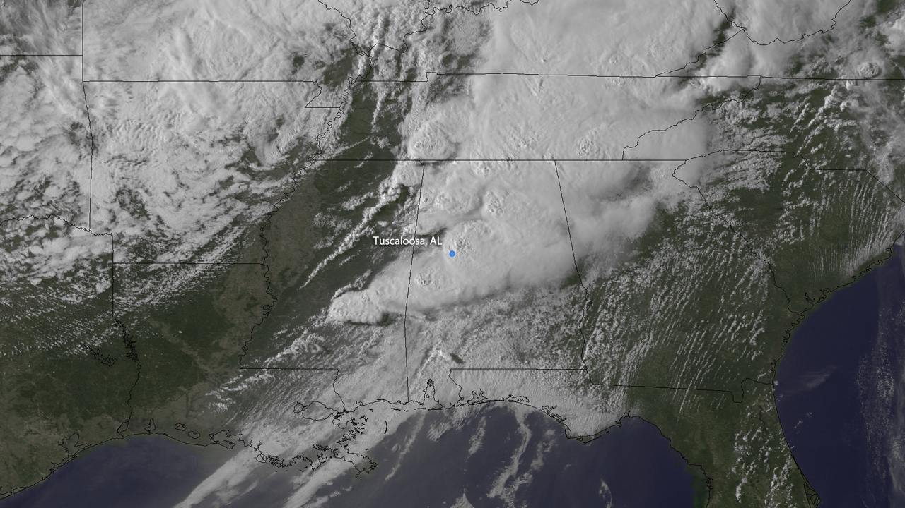
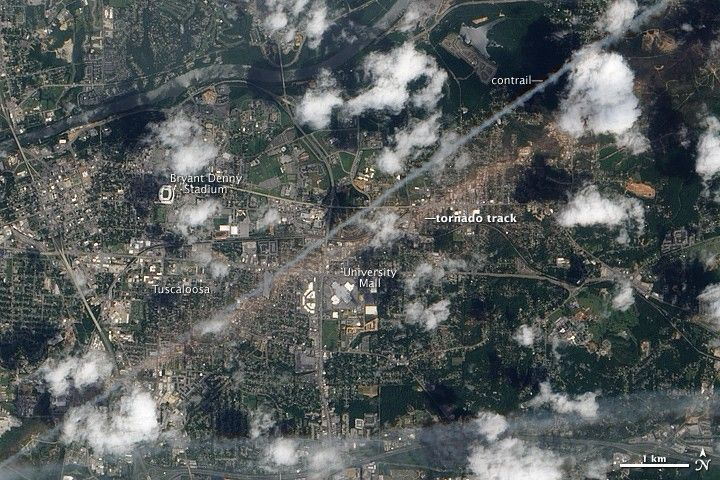
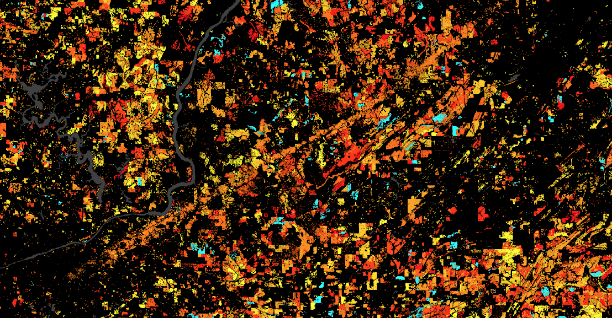
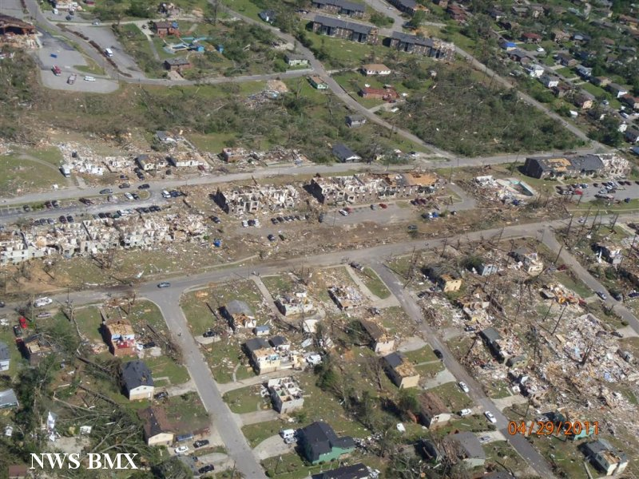
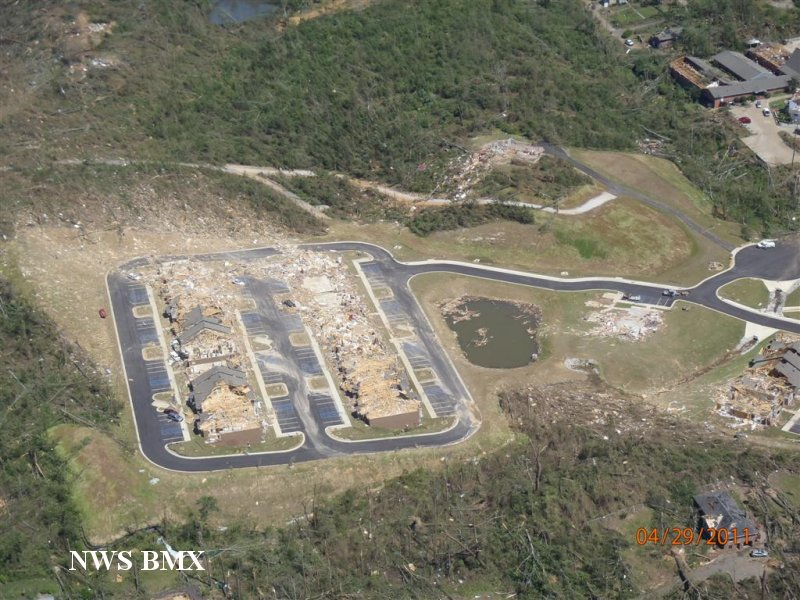
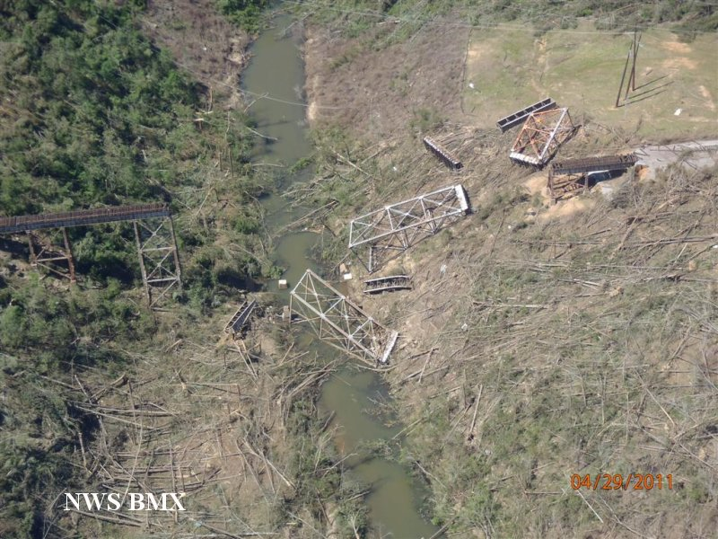
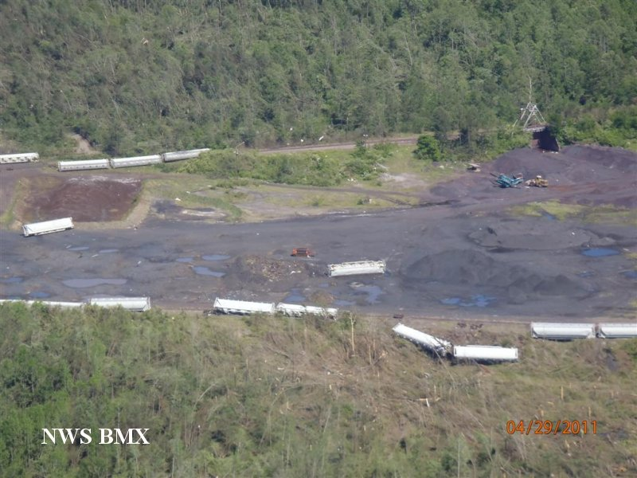
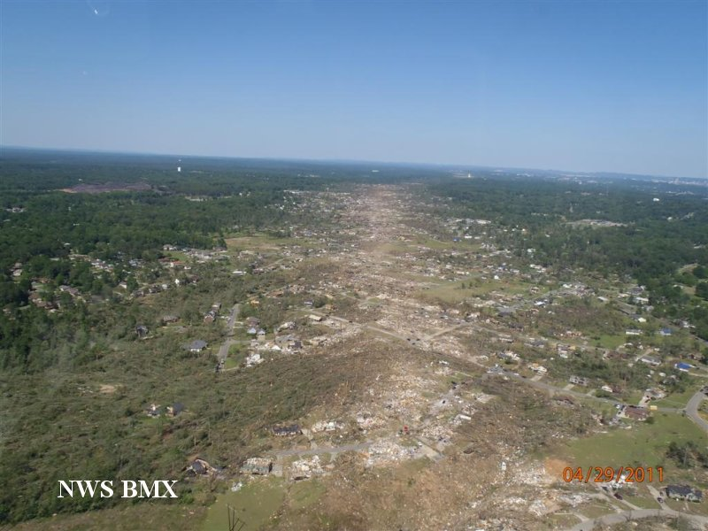
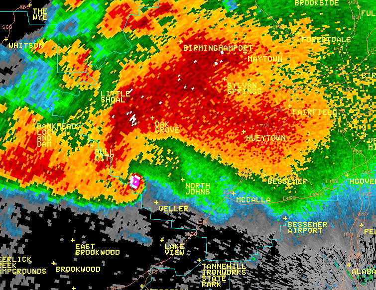
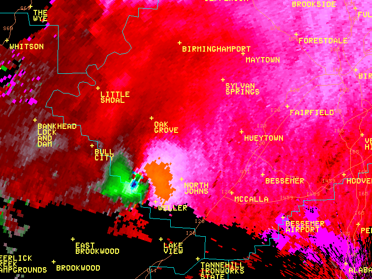

Tuscaloosa and BirminghamApril 27, 2011
One tornado. Many kinds of loss.
Follow the documented damage from rural Greene County through Tuscaloosa and the western Birmingham suburbs. Then ask what the warnings could reach, and what the surviving records can tell us.
The NWS Birmingham survey follows a tornado that began in northern Greene County, crossed southern Tuscaloosa County and western Jefferson County, and lifted northeast of downtown Birmingham. Its parent storm produced other tornadoes later. This account follows this one documented track, rather than treating the storm's entire journey as one tornado. NWS Birmingham survey
- Whole-track rating
- EF4 NWS damage survey
- Reported length
- 80.68 miles Whole surveyed track
- Maximum width
- 2,600 yards Reported near Interstate 65
- Reported event interval
- 4:43 to 6:14 p.m. Approximate survey times, CDT
This is a source-backed documentary exhibit with two original NWS radar images, five contextual aftermath photographs, three satellite views and three retained county records of the track. No detailed survey footprint, registered camera, inspected video interval or historical appearance reconstruction is published here. The radar captions supply a reported time, without an independently aligned clock. The photographs show the aftermath without assigning camera locations or verified capture times. The satellite views preserve their own dates and extents without a shared registration. Other damage images remain research leads. The account and its source routes work without loading a map or an external player.
The parent storm traveled farther than this tornado.
The survey traces the supercell from Newton County, Mississippi, at 2:54 p.m. CDT to Macon County, North Carolina, at 10:18 p.m. It reports several tornadoes along that much longer storm journey. The Tuscaloosa and Birmingham track is a particular part of it. The later tornado near Ohatchee belongs to a separate account. Survey, opening account and final paragraphs
The current catalogue stores the Greene, Tuscaloosa and Jefferson County portions separately. Their continuation fields point from Greene to Tuscaloosa and from Tuscaloosa to Jefferson. Their reported boundary endpoints meet. Those links support a reviewed association with this exhibit, while each original record keeps its rating, clock, dimensions and impact fields. They do not establish a street-level route between endpoints. Inspect the event dossier
Three satellite views answer different questions.
A cloud shield can cover a much larger area than a tornado's damage. These three images preserve different views and their own source clocks. Read them beside the written survey progression and radar products. They are not an aligned before and after pair, a map overlay or a continuous sequence.
The cloud field during the storm



Look first at the cloud field and the source's city label. The image helps place the storm in its regional setting. It does not resolve a visible funnel at Tuscaloosa, the edge of the damaged area or the arrival time at a building. The parent supercell's longer journey remains distinct from this tornado's particular track.
The debris track several days later


The tan debris band passes south of the stadium and north of the mall in the labeled image. The brighter line nearby is identified as an aircraft contrail in the original account. Keeping those features distinct prevents a tempting visual mistake. Scattered clouds obscure part of the surface. Neither the image nor its 1 km scale supplies the full surveyed track, an EF rating for a pixel, a building's failure time or a wind field.
The USGS Landsat scar rendering.
The EO-1 display identifies landmarks within Tuscaloosa. This separate Landsat view shows a differently processed scar rendering associated with the track by USGS. A warm-colored band runs diagonally across the scene among colored patches and dark river shapes. The source associates it with the Tuscaloosa-Birmingham destruction trail.
The image has no printed legend, scale or acquisition date. Its colors are not used here as damage ratings or wind measurements. The page is labeled April 27, 2011, which is the event date, but that label does not establish when the satellite acquired the image. This view is not aligned with EO-1 or the county records, and it does not establish the complete 80-mile track. The written survey progression below remains the route for inspecting documented impacts.
Landsat corridor display


Read the views in sequence, without synchronizing them.
- Use the GOES view to see the regional cloud setting at its reported source time.
- Use the EO-1 view to inspect the later ground trace and its original place labels.
- Use the USGS scar rendering with its unknown acquisition clock and color meaning kept explicit.
- Follow the survey's named places for damage descriptions, then read why damage is not a direct wind measurement.
The images have different fields of view and source versions. No coordinates, measured width, matching pixels or shared animation are derived from their visual similarity. Their descriptions, credits and original-source links remain useful without JavaScript or a map.
The same track had different outcomes along it.
This sequence follows the survey's written progression. Place names locate the account, but are not newly geocoded damage points. The survey does not assign a verified arrival minute to each stop below. Read the original place-by-place survey
- Greene County to Ralph
A rural beginning
After beginning in northern Greene County, the tornado entered Tuscaloosa County near County Road 60, west-northwest of Ralph. The survey describes tree damage and relatively limited structural damage consistent with EF2 in that approach. It strengthened after crossing the Black Warrior River on its way toward the city.
- Tuscaloosa
Homes, businesses and emergency operations
Near Interstate 359, destroyed buildings included the county Emergency Operations Center. Farther northeast, the survey describes destroyed stores near 15th Street and McFarland Boulevard, extensive damage in Cedar Crest, nearly complete destruction at Alberta Elementary School, and a nearby two-story apartment building reduced to rubble.
- Holt and Brookwood
The destruction continued beyond the city
The account follows destroyed houses and mobile homes toward Holt Lock and Dam Road, Recreation Area Road and Holt Lake's marina. North of Brookwood, it describes a narrower path and damage consistent with EF3. A city's edge was not the end of the danger.
- Concord and Pleasant Grove
Violent damage returned
In western Jefferson County, the survey again identifies EF4 damage. It describes destroyed shops and houses in Concord, then widespread destruction across western and northern Pleasant Grove. A change in the surveyed rating did not mean a different tornado had begun.
- McDonald Chapel and Smithfield Estates
Building outcomes differed within the damaged area
At McDonald Chapel, the survey contrasts severe damage to pier-and-beam houses with a four-sided brick home that lost its roof. In Smithfield Estates it records damaged homes, apartments and a church. These observations form part of its lower EF2 assessment in this portion.
- Interstate 65 and the ending
A broad damaged area near the end
Near Interstate 65 and U.S. 31, the survey gives a maximum width of 2,600 yards and describes folded light poles and building damage. Farther northeast, its damage ratings diminish before the tornado lifts west of Alabama 79. The approximate ending coordinate and the later catalogue record are retained separately from those named places.
Inspect the progression's source and limits. The original survey map remains available on the NWS page. This exhibit has not digitized its footprint or filled the gaps with a line connecting neighborhoods.
A damaged neighborhood north of Birmingham


The view helps connect the written account to a neighborhood people lived in. The source supplies only the locality above. It does not establish that these particular buildings are the McDonald Chapel examples, where the camera was, or when each structure was damaged. The printed date is a source label, not a calibrated capture clock. This image is not used to measure wind speed or assign a building's damage rating.
An apartment complex in the survey photograph


The elevated view makes the arrangement of the damaged site visible. The survey caption does not name the complex, and this exhibit has not matched it to a particular place in the written progression. Remaining wall or roof portions are visible, so the caption's word "leveled" should not be read as a measurement of every structure. The photograph alone does not establish the sequence or mechanism of failure, a wind speed, or a building's damage rating.
A railway bridge in the survey photograph


This view adds railway infrastructure beside the residential aftermath photographs. The bridge and waterway remain unidentified, so this image is not matched to a crossing or stop in the written progression. The caption's word "demolished" describes the source's account, while a section remains visible. A still photograph does not establish the failure sequence, the forces that displaced a section, or a wind speed.
Rail cars in the survey aftermath


This photograph adds rolling-stock aftermath beside the bridge's fixed infrastructure. The images are not established as views of the same railway or place. The source's movement description is attributed. A single photograph does not establish failure sequence, force, wind speed or trajectory. The printed date is a source label, not a calibrated capture clock.
A wider view of the survey aftermath


This wider view lets the reader compare the visible landscape with the closer neighborhood, complex and bridge subjects. The locality is unidentified, and the pictures are not established as views of the same place. The photograph is not assigned to a stop in the written progression. It does not establish the complete track, measure path width or wind speed, assign a damage rating, or locate victims.
A study boundary is not the tornado's edge.
The July 2011 report by David O. Prevatt and colleagues describes a six-mile Tuscaloosa study area with a half-mile-wide buffer. That research boundary is not a measured continuous tornado width. Investigators synchronized cameras with GPS for their May 2 to 5 damage survey. Those are aftermath collection clocks, not building-impact times. Damage ratings informed wind estimates, rather than directly measuring winds at each building. Original report, printed pages 6 and 10 to 12
Atlas has not acquired the original GPS tracks, calibration photographs or field database. This account does not register the exhibit photographs from that method description. Inspect the source, collection clocks and registration limits.
A maximum is not a moving measurement.
The survey's EF4 rating and estimated maximum wind of 190 mph are damage-based assessments. They are not a wind sensor reading at every house. Its maximum track width near Interstate 65 is a reported damage width, not an observed condensation-funnel diameter. Neither value describes every minute along the track. Survey summary and damage account
The contrast at McDonald Chapel is particularly useful. Houses of different construction experienced different damage near the same named road junction. The survey records the outcomes. It does not isolate every difference in construction, exposure, debris impact or failure sequence. A photograph of the remains could help explain that contrast, but resemblance alone would not measure the wind or prove which feature caused a particular failure.
What can go on the map now?
The retained source records supply approximate segment endpoints. The narrative supplies named affected places. A future damage layer needs an inspectable survey location, a stated feature or damage indicator, and its own source basis. A place name is not yet a surveyed building coordinate. Inspect this distinction
A warning also needed a way to reach someone.
Before the tornado: the forecast became more explicit.
Three selected regional outlooks in the NWS Birmingham archive show changing expectations before the afternoon tornado.
Wednesday confidence had increased, with tornadoes possible. Tuesday confidence remained low.
Afternoon and evening supercells capable of strong, long-tracked tornadoes were expected across Central Alabama.
A severe-weather outbreak was likely, with strong, long-lived tornadoes possible. The outlook urged preparation and monitoring while allowing for timing changes.
These are forecast issue times, not tornado arrival, warning lead time or proof of individual reception. The compilation's publication date is unknown.
Original outlook text. Inspect source record. Inspect forecast progression.
The December 2011 NWS assessment examines the wider April outbreak. Its Tuscaloosa examples describe problems beyond recognizing the storm. The assessment describes a warning issued at 4:15 p.m. CDT for a supercell in western Tuscaloosa County. A new supercell then formed inside the same polygon, making the pathcasts difficult to manage. It separately identifies the use of McFarland Mall, Bryant-Denny Stadium and Deerlick Creek Campgrounds in the warning immediately before the tornado struck Tuscaloosa as a best practice. These are distinct findings about managing a changing threat and making a warning locally recognizable. Assessment, printed pages 17 and 18
Communication and access to shelter mattered after a message was issued. The report describes Tuscaloosa police using bullhorns along streets, and interviews about disruptions to power and communications. It separately examines limited shelter availability. Issuing a warning, receiving it and having somewhere safer to go were different parts of the response. Communication, printed pages 29 and 30 · Shelter discussion, printed pages 35 to 37
The assessment's survivor interviews were conducted across several affected states 10 to 13 days after the outbreak. They were not a random or representative survey. They excluded hospital interviews with severely injured people and direct interviews with deceased victims' families, and did not use a fixed questionnaire. Their accounts explain experiences investigators encountered, not how often every resident acted in a particular way. Appendix C, interview method and limits
Inspect the exact assessment portions and access record. This chapter does not derive a Tuscaloosa warning lead time from an outbreak-wide average.
The loss is real. The totals need their labels.
The NWS Birmingham survey page lists 65 fatalities for the track. The December 2011 assessment's summary row for Tuscaloosa and Jefferson lists 66. The retained 2026 revision of the Storm Events catalogue has different county classifications: the Tuscaloosa segment reports 44 direct and 8 indirect deaths, while the Jefferson segment reports 20 direct deaths and no indirect deaths. The Greene segment reports none. Survey summary · Assessment, Table 1, printed page 6 · Retained source records
The Tuscaloosa narrative includes deaths reported in the months after the tornado and separates them from direct injury. These dates, classifications and revisions cannot be collapsed into one unqualified number. This exhibit retains the disagreements without inventing a reconciled total or assigning a person's death to a plotted damage location. Read the source-disagreement record
The damage sequence includes homes, schools, businesses and places of worship because they were part of daily life, not just rating indicators. A checked list of names and a documented local remembrance source remain future work. No victim names or locations have been inferred from these county totals.
Keep the clock convention beside the time.
The survey gives approximate whole-track times of 4:43 to 6:14 p.m. on April 27. Its account uses Central Daylight Time. The three catalogue segments instead retain the source's CST-6 standard-time convention: 15:43 to 15:48, 15:48 to 16:35, and 16:35 to 17:14. The current importer converts that combined standard-time interval to 21:43 through 23:14 UTC, matching the survey's approximate daylight-time endpoints. That agreement does not establish a camera clock or an arrival time at each damaged building.
The December assessment's Table 1 labels its clock CST and gives 3:50 to 4:45 p.m. for the Tuscaloosa and Jefferson row. That shorter summary interval has not been reconciled with the three county segments. The original labels remain visible. This exhibit supplies no synchronized playback or interpolated position from these differing intervals. Inspect the clock and scope comparison
The same storm, two different measurements.
The NWS survey places these two KBMX images at the reported Tuscaloosa-Jefferson County crossing at 5:38 p.m. on April 27. Its captions identify a 0.5-degree elevation scan. Both complete images are preserved in their original colors and bytes. Select either image to inspect it at full size. Original image captions and inspection record
Reflectivity represents energy returned to the radar. Velocity measures motion along the radar beam, toward or away from the radar. The storm-relative product removes the storm's motion to help reveal motion within it. These products answer different questions about the storm. NWS explanation of reflectivity and storm-relative motion
Reflectivity


Storm-relative velocity


Keep the source label beside the image.
The captions supply the station, product, elevation angle and reported time. The images themselves contain no timestamp, units or color key. The radar captions do not repeat a time-zone label, and no independent clock alignment is assigned. These are two single-frame images, with no intervening scans or continuous playback supplied. Their place labels are useful context, but this exhibit has not georeferenced the raster or derived a beam height.
Neither product establishes a visible funnel outline, an exact tornado coordinate, a surveyed damage boundary or a measured surface-wind field. The original NWS radar material is not subject to copyright protection. It is attributed here without implying government endorsement. The individual image maker is not named. NWS material and third-party rights policy.
Which visual questions remain open?
Five survey photographs are now available above, each with its own visible credit, printed date and narrow reuse record. The remaining survey images still need their own pixel and rights review. The assessment's Figure 16 is captioned as a destroyed wood-frame home in Concord, credited to Gary Woodall. That report figure remains a useful lead, but its pixels and full item-specific rights have not been inspected for this exhibit. No inspected video interval or registered camera view has been added. Original survey image section · Assessment, Figure 16 and caption.
A contextual image can be useful while remaining unregistered. A historical appearance reconstruction requires its own camera and clock evidence. Inspect the current evidence coverage.
Read the original account beside this one.
- NWS Birmingham: Tuscaloosa and Birmingham EF4 survey
Summary, complete written damage progression, approximate endpoints and image captions inspected on October 5, 2026. The two KBMX radar images and five separate aftermath photographs were inspected in separate increments below. Remaining survey image pixels are unreviewed. Source card, attribution and limits.
- NWS Birmingham: the paired KBMX radar captions and original images
Complete original reflectivity and storm-relative velocity GIFs visually inspected by an agent and independently checked during composition on October 5, 2026 UTC. Original byte identities, dimensions, single-frame status and absent key/timestamp are recorded separately from the caption's reported time. Source card and exact inspection · Media preservation and reuse record.
- NWS Birmingham: destruction just north of Birmingham
The complete original photograph, exact survey caption, visible NWS BMX credit and printed April 29 date were independently inspected on October 5, 2026 UTC. Only embedded metadata was removed for publication; image pixels and visible attribution are unchanged. No camera coordinate or verified capture time is assigned. Source card and item-specific rights basis · Preservation and publication-copy record.
- NWS Birmingham: Apartment Complex Leveled
Complete original pixels, exact survey caption and visible credit/date independently inspected October 5, 2026 UTC. The complex is unnamed. Only EXIF metadata was removed for publication; no camera or capture-clock registration is assigned. Source card and item-specific reuse basis · Preservation and source decision.
- NWS Birmingham: Train Bridge Demolished
Complete original pixels, exact survey caption and visible credit/date independently inspected October 5, 2026 UTC. The bridge, waterway and locality remain unnamed. Only EXIF metadata was removed for publication; no camera or capture-clock registration is assigned. Source card and item-specific reuse basis · Preservation and source decision.
- NWS Birmingham: Train Cars Derailed & Thrown
Complete original pixels, exact caption and visible credit/date independently inspected October 6, 2026 UTC. The locality, railway and photographer remain unknown. Only EXIF metadata was removed for publication. No camera or capture-clock registration is assigned. Source card and item-specific reuse basis · Preservation and source decision.
- NOAA NESDIS: The Tuscaloosa-Birmingham EF-4 Tornado
Original caption and complete regional GOES image inspected October 6, 2026 UTC. The caption's April 27, 2011 at 22:15 UTC remains a reported acquisition label. The publication copy is a disclosed full-image rescale, with the city label and state lines preserved. Source identity, rights basis and original image.
- NASA Earth Observatory: Tornado Track in Tuscaloosa, Alabama
The labeled May 2 EO-1 display and separate wider download were inspected with the original May 5 article and creator credits. The article display is preserved byte for byte. Its scale and landmarks belong to that source view. Source identity, credits and reuse basis · Two-image source and extent decision.
- NWS Birmingham: pre-event Hazardous Weather Outlooks
Agency-authored regional forecast text, reproduced on an undated compilation page. Source card and exact inspection.
- NWS: The Historic Tornadoes of April 2011, December 2011
Selected original report text: printed pages 5 to 9, 17 and 18, 29 and 30, 35 to 37, and Appendix C. The PDF's text was readable, but a bounded original-file retrieval failed. No report pixels or retained image derivatives are claimed. Exact inspection and method record.
- NWS Birmingham: Aerial View of Scope of Damage Path
Complete original pixels, exact caption and visible credit/date independently inspected October 5, 2026 UTC. The locality remains unidentified. Only EXIF metadata was removed for publication; no camera or capture-clock registration is assigned. Source card and item-specific reuse basis · Preservation and source decision.
- NOAA NCEI: 2011 Storm Events details, revision March 23, 2026
Existing retained snapshot inspected, event IDs 314625, 314662 and 314663. The county records preserve original local standard-time labels, continuation fields, reported endpoints, damage narratives and direct/indirect classifications. They are one underlying agency survey/reporting stream, not three independent eyewitness sources. Snapshot identity and exact rows.
- Prevatt and colleagues: July 27, 2011 damage-study report
Printed pages 6 and 10 to 12 inspected as text on October 6, 2026. Report authors and field-method scope are retained separately from the existing survey photographs. No report images, database or camera registration are supplied. Source identity, access and reuse limits.
- NWS use of government and third-party material
Government material is public domain unless otherwise noted, with attribution and no implied endorsement. Credited third-party material has separate rights. The agency's page does not by itself clear every photograph for hosting. This account is an attributed museum interpretation, not an official NWS product. Rights inspection.
- The USGS Landsat scar rendering
The complete returned still, source caption and credits were inspected on October 7, 2026 UTC. The retained display is not raw instrument data or a registered historical reconstruction. Inspect the exact source and reuse basis · Source and display decision.


Read the research and source-association record · Suggest a correction or original source